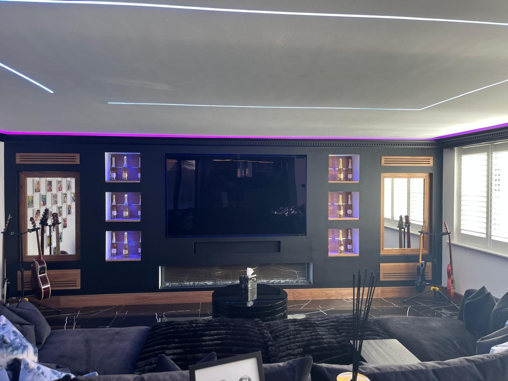
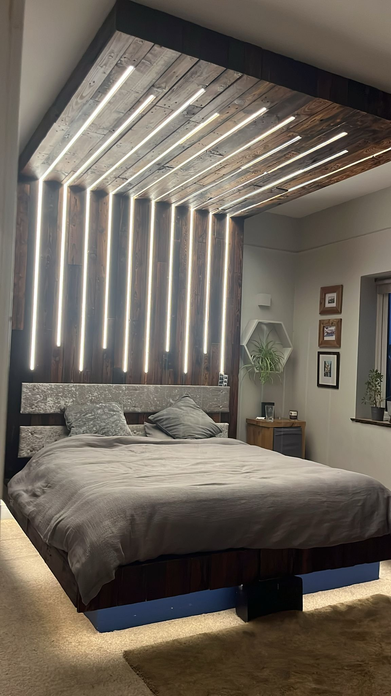
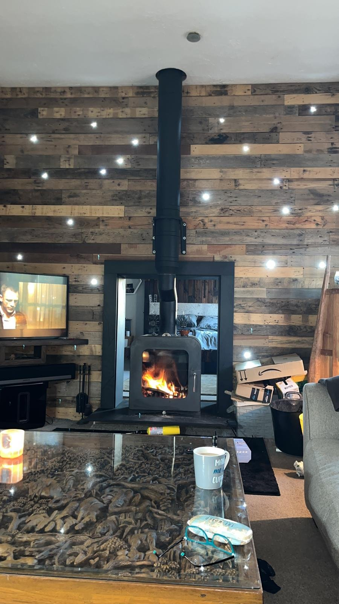

Build in progress — teaser photos are in, body copy still placeholder pending confirmed brand assets and Dan's own voice.
Feature walls, beds, and media units made to measure, for rooms where nothing off-the-shelf is good enough.
See recent commissionsDS Carpentry works exclusively on bespoke joinery — feature walls, statement beds, and made-to-measure media units, built around the room rather than adapted to fit it. [Placeholder — refine into Dan's own voice once confirmed.]

[Placeholder — a line or two on the niche lighting, the fire integration, and why this layout suited the room.]

[Placeholder — a line or two on the canopy construction, the LED detailing, and the brief behind it.]

[Placeholder — a line or two on the reclaimed timber, the woodburner integration, and the room it was built for.]